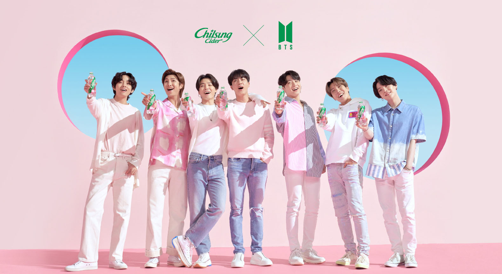

React Router : URL
react-router-dom을 이용하여 새로 고침 없이 콘텐츠를 빠르게 이동할 수 있도록 제작했습니다. 콘텐츠 이동 시 상단 URL이 해당 소스에 맞춰 변경됨을 확인할 수 있습니다.

react-router-dom을 이용하여 새로 고침 없이 콘텐츠를 빠르게 이동할 수 있도록 제작했습니다. 콘텐츠 이동 시 상단 URL이 해당 소스에 맞춰 변경됨을 확인할 수 있습니다.
useState hook을 이용하여 다음 버튼을 누르면 이미지가 변경되도록 작업했습니다. 연도 인덱스와 화살표 버튼 모두 눌렀을 때 이미지가 바뀔 수 있도록 기능을 넣어주었고, 맨 끝에 가면 맨 처음으로 되돌아갈 수 있도록 했습니다. 이미지는 JSON에 데이터처리 하여 배열로 가져온 뒤 연도별로 뿌려주었습니다.
기존 슬라이드 형식의 연도 정렬과 다르게 table 표로 연도를 정리해 주었습니다. filter hook을 사용하여 원하는 연도를 누르면 해당 연도와 일치하는 정보만을 보여주도록 제작했습니다.
굿즈 이미지들의 이름을 배열에 담은 뒤 함수를 이용하여 일정한 방법으로 뿌려주었습니다. 각 이미지들의 사이즈를 지정하여 한 행에 3개씩 반복하도록 했습니다.